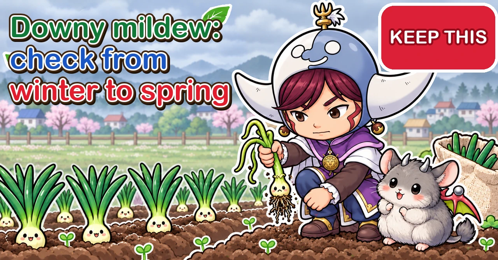
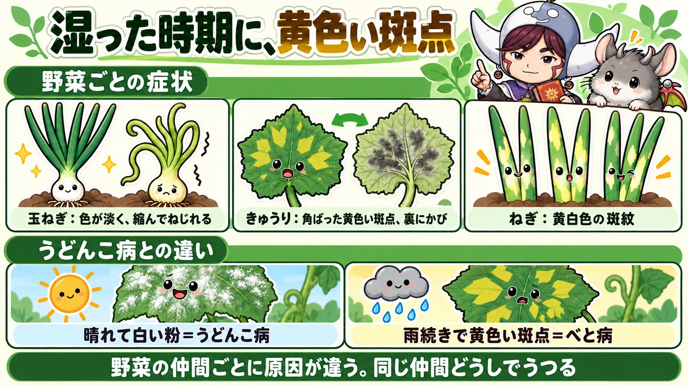
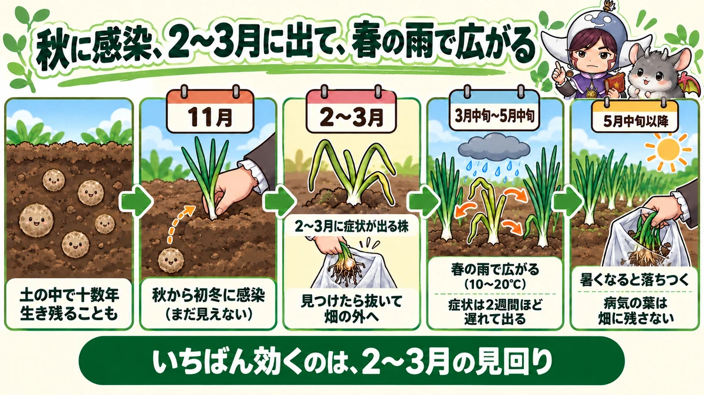
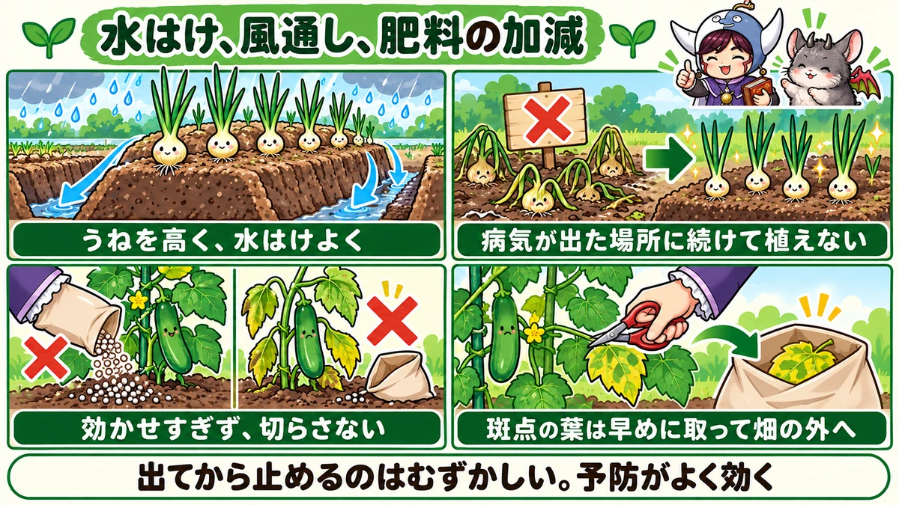

Downy mildew 🧅 Onions are won or lost from winter to spring — cucumbers in damp weather and when they run short of food

🧅 "My onions came through winter fine, then in spring the leaves went pale and limp — and it's spreading."
🧅 "Yellow squares appeared on my cucumber's lower leaves and shot up the plant."
🧅 "Is this downy mildew or powdery mildew?"
Hello, I'm Eiko. Eight years of growing vegetables organically and without pesticides, and a teaching licence in science.
Downy mildew is hard to stop once you can see it. Autumn-planted onions are in the ground for more than half a year, from autumn planting to an early-summer harvest — and if you don't know what's happening at each stage, you'll be scrambling in spring. But once you know when, where from and how it spreads, you can act ahead of it.
This article covers what downy mildew is, symptoms and the yearly cycle crop by crop, prevention without pesticides, what to do when you find it, and how to tell it from look-alikes — with extra detail on onions, as planting time is here.
Looks like: onions — overwintered plants go pale yellow-green, shrink a little and twist; in spring, large yellowish-white blotches, with greyish mould on damp mornings. Cucumbers — angular yellow spots boxed in by the leaf veins on lower leaves; sooty dark mould underneath. Leeks and Welsh onions — yellowish-white blotches; leaves die back from the tips.
Favoured by: long wet spells, high humidity, leaves staying wet; cool to mild temperatures (onions about 50–68°F / 10–20°C, cucumbers about 68–75°F / 20–24°C); poor drainage and crowded plants; soft growth from too much fertiliser, or plants weakened by running short; last year's infected spot, or diseased plants close by.
What to do: don't plant the same family where it appeared last year; raise beds and improve air flow; don't over-feed and don't let plants run short; check onions weekly in late winter (February–March in central Japan) and take affected plants off the plot; remove spotted cucumber leaves early; leave no crop debris behind.

What this diagram says （図解の文字）
- Yellow spots in damp weather
- "Symptoms by crop": "onion: pale, shrunken and twisted" ／ "cucumber: angular yellow spots, mould underneath" ／ "Welsh onion: yellowish-white blotches"
- "How it differs from powdery mildew": "sunny weather and white powder = powdery mildew" ／ "wet weather and yellow spots = downy mildew"
- "The cause differs by plant family. It spreads within the same family"
① What downy mildew is
A disease of water-loving moulds
Downy mildew is caused by water-loving mould-like organisms. In humid air they form spores on the leaves, which wind and raindrops carry to new leaves. It spreads in muggy, damp weather — and the longer the leaf surface stays wet, the easier it is for spores to germinate and get inside.
Each plant family has its own
Many vegetables get downy mildew, but the organism is more or less specific to each family:
- The onion family: onions, Welsh onions, leeks, shallots
- The cucumber family: cucumbers, melons, squash
- The cabbage family: Chinese cabbage, daikon, cabbage, turnips
- Spinach, lettuce and others
So cucumber downy mildew doesn't normally jump to the onions next door. But within a family — onions, Welsh onions, shallots — assume it can spread. Infected Welsh onions or shallots near your onion bed can pass it on.
Why it matters
Spotted areas stop photosynthesising and die, the plant weakens, and yields fall.
- Onions: if leaves die while the bulbs are swelling, the bulbs stay small — and bulbs from diseased plants rot more easily in storage
- Cucumbers: leaves die from the bottom up, fewer fruits set, and the harvest ends sooner
- Welsh onions: leaves die back and look poor
② Onion downy mildew
Onions have relatively few pests and are easy to grow without pesticides; the diseases to watch are mostly spring ones like downy mildew and rust. Get downy mildew under control and you can enjoy a good harvest without spraying.
The yearly cycle
For autumn-planted onions that overwinter, as in central Japan, infection, symptoms and spread happen at clearly different times. Knowing this cycle is the shortcut to controlling it.
- Surviving in the soil: thick-walled resting spores formed in last year's diseased leaves stay in the soil. They're long-lived — some are said to lie dormant for more than ten years.
- Infection in autumn to early winter: after planting, seedlings are infected from spores in the soil. Nothing shows yet.
- Symptoms in late winter (February–March): the disease develops inside overwintering plants and shows mainly in February and March. These are called overwintered infected plants.
- Spread in spring rain (secondary infection): spores formed on those plants are carried by wind and rain to their neighbours. Infection is easiest at 50–68°F (10–20°C) on rainy days when leaves are wet, especially from mid-March to mid-May. It takes about two weeks from infection to symptoms.
- Settling down after mid-May: as it warms, the disease loses momentum. But inside diseased leaves, new thick-walled spores form and return to the soil.
Spotting overwintered infected plants
- Leaves paler yellow-green than their neighbours, without gloss
- The whole plant slightly shrunken, the leaves bent and twisted
- On damp mornings, grey to purplish mould may show on the leaf surface
Don't mistake them for cold damage: cold browns the leaf tips first, while infected plants turn pale all over and shrink.
The late-winter check, step by step
- Go early in the morning or on an overcast day — colour differences are easier to see than in bright midday sun.
- Work from one end of the row, plant by plant, looking at leaf colour and twisting. Look for any clearly paler, shrunken or twisted plant.
- If one catches your eye, look closely at the leaf surface — on a damp morning you may see greyish mould.
- If it's an infected plant, pull it out roots and all, there and then, and put it in a bag you've brought.
- Fill and level the hole.
- Tie the bag and take it off the plot to dispose of.
Repeat weekly through February and March. You won't find them all the first time, but each look catches more.
Pull them as soon as you find them
An overwintered infected plant keeps producing spores all spring and becomes the source of infection for its neighbours. Even a few can spread it through the bed.
- In February–March, check the onions at least weekly
- Pull infected plants roots and all
- Bag them and take them off the plot — not to a corner, not to the compost heap
Pulling a plant feels wasteful, but that one plant can infect dozens. Pull it early, before secondary infection starts.
In spring, check after rain
From mid-March, secondary infection begins. Look for new blotches a few days after rain, and again about two weeks after. On plants with large yellowish-white blotches, remove the diseased leaves, or the whole plant if it's bad.
Wet springs need extra care
Secondary infection is most likely on warm, rainy days. Some advisory material warns that a year with heavy March rain coinciding with warm days gave ideal conditions for infection, and a spring forecast to be warmer than usual is thought to favour the disease. In a wet or warm spring, check more often, and make sure the trenches between beds aren't blocked and water isn't standing.
If it has spread, harvest early
If it spreads near harvest and leaves are dying one after another, it can be better to harvest early, whatever the bulb size. Left in the ground, the bulbs themselves deteriorate and rot more easily in store. Dry harvested onions on the plot on a sunny day before cutting off the leaves and roots — cut straight away, and sap from the cut can lead to mould and rot.

What this diagram says （図解の文字）
- Infected in autumn, showing in February–March, spread by spring rain (central Japan)
- "Can survive in the soil for more than ten years" → "November: infected in autumn to early winter (not visible yet)" → "February–March: plants showing symptoms — pull them and take them off the plot" → "mid-March to mid-May: spreads in spring rain (10–20°C / 50–68°F); symptoms appear about two weeks later" → "after mid-May: settles down as it warms; leave no diseased leaves in the plot"
- "What works best is the February–March check"
Harvest and storage
- Harvest on a sunny day
- Lay the onions out all facing the same way and dry them on the plot for 2–3 days; even in a wet spell, give them at least one sunny day
- Cut the leaves and roots only once they're well dried
- Keep bulbs from diseased plants separate — they spoil faster — and eat them first
- Hang onions for storage in a shady, airy place
Stored together, rot can spread from damaged bulbs to healthy ones. Separating them at harvest cuts storage losses (see harvesting and storing onions).
③ Preventing it in onions
When preparing the bed
- Correct acidity with lime — but don't overdo it in the hope of warding off disease
- Add compost for soil that drains well and holds water
- Keep the base dressing modest; not too much nitrogen
- Make the beds high, especially where water sits after rain
- Plant at the right time: too early and they're overgrown by winter; too late and it turns cold before they root
- Space plants about 6 in (15 cm) apart so air still moves when they're leafy in spring
- Use mulch film or straw round the base to stop rain splashing soil — and the disease with it — up onto the leaves
1. Choose the spot
- Not where onions, Welsh onions or shallots had downy mildew last year or the year before
- Not near Welsh onions or shallots with downy mildew
- Somewhere sunny and airy
The disease survives a long time in the soil. Where it was bad, keep the onion family away for several years.
2. Raise the beds and improve drainage
- Make the beds high (especially where water collects)
- Dig trenches between beds so rainwater can escape
- In early spring, lightly loosen paths trodden hard over winter so water soaks in
3. Feed modestly, on time
Too much nitrogen gives soft, lanky leaves that catch disease easily. Keep to the amounts for base and top dressings, keep any winter feed very light, and stop feeding on time (see the final feed for onions).
4. Leave no diseased debris
Take onion leaves and diseased plants off the plot after harvest. Dig diseased leaves in and the thick-walled spores formed inside them stay in the soil.
5. Pay attention from autumn
Infection happens in autumn and early winter, after planting. From planting day, mind drainage, air and feeding.
Home-made sprays and products
Some growers who avoid pesticides try sprays made by culturing natto bacteria (Bacillus subtilis), or wood vinegar, on onions from autumn into winter. How well they work is unclear, so treat them as an extra on top of the basic prevention above. Some shop products, such as copper-based ones, are permitted in organic growing. If you use any, check the label for crops, timing and number of applications. Downy mildew is hard to control once it shows, so whatever you use is preventive.
④ Cucumber downy mildew
Symptoms
- Starts on the lower leaves
- Small pale yellow spots at first; as they grow, angular yellow patches boxed in by the leaf veins
- Patches join up and the leaf turns mottled
- In damp weather, sooty dark mould forms under the patches
- Even when old, the patches don't turn into holes
Favoured by
- About 68–75°F (20–24°C) with high humidity
- Long wet spells — the rainy season and the muggy weeks after
- Leaves staying wet a long time
- Crowded plants with poor air flow
- Plants weakened by running short of fertiliser
- When the main stem has been stopped and growth gets dense and humid inside
- When the harvest is in full swing and plants are tiring
Prevention
- Space plants out and train the vines so the leaves don't overlap
- Remove lower and old leaves to let air reach the base
- Mulch film or straw to stop rain splash
- Water in the morning, at the base — don't leave leaves wet into the evening
- Don't let them run short of food, especially while you're picking a lot
When you find it
- Cut off spotted leaves early
- Bag them and take them off the plot
- Top-dress to restore vigour
- If it's early and the upper leaves are healthy, the whole plant won't necessarily die — protect the new leaves
Checking cucumbers, step by step
- Work up from the base, looking at the top and underside of the lower leaves especially.
- Look for yellow spots — are they angular, and is there sooty mould underneath?
- Cut spotted leaves off at the base of the leaf stalk with scissors and bag them.
- Tidy away yellowing old leaves and those near the ground at the same time.
- If the leaves are paling overall or the fruits are curling, the plant is short of food — top-dress.
In wet spells, look every two or three days and you'll catch it while there are only a few spots.
⑤ Welsh onions, brassicas, spinach and others
Welsh onions and leeks: yellowish-white blotches, dying back from the tips. Cut leaves with dark spots off at the base. New leaves keep coming from the centre, so a healthy plant recovers once diseased leaves are removed. Old leaf tips dying back in summer heat isn't necessarily disease — tell them apart by whether the tip dies evenly or there are spots partway down.
Watch the onion family together: onions, Welsh onions, shallots and Chinese chives can share the same organism. If one gets it, check the others nearby — and before choosing where to plant onions, check nearby Welsh onions and shallots.
Chinese cabbage, daikon and other brassicas: in a wet autumn, yellowish patches boxed in by veins may appear on the outer leaves. Remove those leaves and take them off the plot. If the young centre leaves are healthy, growth is rarely held back much.
Spinach: in spells of cold rain, yellowish spots with greyish mould underneath. Crowding encourages it, so thin to let air through.
Autumn and winter greens: dead leaves at the base, or leaves stuck to the mulch, hold damp and invite disease. Lower dead leaves do almost nothing for photosynthesis, so tidy them each time you check. Where plants are crowded, take a few outer leaves to let air in.
Melons, squash and bitter gourd: the same family as cucumbers, with the same angular yellow spots. Check lower leaves in wet weather; prevention and treatment as for cucumbers.
Lettuce: in cool, damp weather, yellowish spots with mould underneath. Peel off affected outer leaves and take them off the plot; leave no dead leaves at the base.
⑥ Telling it from look-alikes
- Powdery mildew: white, floury spots on the upper surface; spreads in dry weather too; comes off on your finger. Downy mildew: yellowish spots (angular on cucumbers); spreads in damp weather; mould mainly underneath, sooty in colour. Sunny spell and white powder — powdery mildew (see powdery mildew). Rainy spell and yellow spots — downy mildew.
- Running short of fertiliser: the whole leaf yellows evenly, starting with the oldest lower leaves — not spots that spread.
- Cold or heat damage to leaf tips: winter onion tips browning from the tip are usually cold; summer Welsh onion tips can be heat. Downy mildew turns the whole leaf pale, or makes blotches partway along.
- Onion rust: small raised orange spots that leave powder on your finger. Also a spring disease, and it can come alongside downy mildew. Downy: yellowish-white blotches and greyish mould; rust: orange powder. Prevention is the same — drainage, air and modest feeding.
- Spring bacterial rot of onions: a healthy-looking onion suddenly flags, then rots with a nasty smell. That's bacterial, not downy mildew — most likely March to May in rainy spells around 59°F (15°C), with bacteria entering wounds via rain splash. Prevent it the same way, with drainage and less splash, and pull rotten plants early.
- Other cucumber leaf spots: if old spots turn into holes, or show whitish masses, it may be another disease. Downy mildew spots don't hole, and have sooty mould underneath.

What this diagram says （図解の文字）
- Drainage, air flow, the right amount of fertiliser
- "High beds, good drainage" ／ "don't plant again where it appeared" ／ "don't over-feed, don't let them run short" ／ "remove spotted leaves early and take them off the plot"
- "Hard to stop once it shows. Prevention works well"
⑦ Through the year (central Japan)
Autumn-planted onions:
- September–October: choose the spot, avoiding past infection; make high beds
- November: plant; modest feeding; check drainage
- December–January: keep any winter feed very light; keep the trenches draining
- February–March: check for overwintered infected plants; pull and remove them; lightly loosen the paths to restore drainage
- Mid-March to mid-May: secondary infection season — check a few days and about two weeks after rain; remove diseased leaves or plants
- May–June: if it has spread, harvest early; leave no leaves or plants behind
Chinese cabbage, daikon and other autumn crops: space them out on well-drained beds; in autumn rains, check the outer leaves and remove spotted ones; tidy dead leaves at the base each time.
Cucumbers and other summer crops: space out and mulch at planting; through the rainy season and after, check lower leaves, remove spotted ones early and keep feeding; at peak harvest, top-dress and tidy lower leaves; at clear-up, leave nothing diseased behind.
⑧ Where growers disagree, and common mistakes
Pull the plant, or just remove leaves? Overwintered infected onions keep producing spores, so pulling them is the rule. If spring infection has only blotched a few leaves, some just remove those leaves and watch. A practical rule: before the spreading season, pull; near harvest, remove leaves and harvest early.
Do home-made sprays work? Some report success with natto-bacteria or wood-vinegar sprays, but it isn't established. Drainage, site, feeding and removing diseased plants come first.
Bicarbonate of soda? Some spray diluted bicarbonate on cucumbers. It's mostly used against powdery mildew; how well it works on downy mildew is unclear. If you use it, do so alongside removing diseased leaves, improving air flow and feeding.
Wood ash or lime? Some spread alkaline ash or lime to suppress the disease. But too much lime makes the soil too alkaline, harming roots and nutrient uptake. Use only what's needed to correct acidity.
Common mistakes:
- Writing off pale, shrunken late-winter onions as "just the cold" — they may be infected and seed the spring spread
- Onions in the same spot every year — the disease stays in the soil; keep the onion family off for several years
- Throwing diseased leaves between the beds — spores fly from them and the disease stays in the soil. Bag them and take them away
- Pushing nitrogen to "perk them up" — softer leaves catch it more easily. Keep to amounts and timing
- Letting cucumbers run short of food — weakened plants let it spread. Keep feeding while you're harvesting
⑨ Questions people ask
If I find one infected onion, do I pull its neighbours too? No. Check their colour and twisting, and leave them if they're fine — but check that area especially carefully for a while.
The only space I have had downy mildew last year. Choose the part furthest from where it appeared. If you can't, combine these: higher beds than usual; soil solarisation under clear plastic in midsummer; modest feeding; extra-careful checks in February–March; or grow them in containers with fresh soil.
Won't removing leaves weaken the plant? Removing a lot at once does. Take spotted and old, dying leaves first and keep the healthy upper ones. If it has spread, remove them over several days, then top-dress to help new leaves come.
How many years before I can plant there again? Some resting spores are said to stay dormant for more than ten years, so there's no "safe" number. Keep it for crops outside the onion family as long as you can. If space is tight, choose the best-drained part, raise the beds, and check carefully in February–March.
Can I eat onions that had downy mildew? Yes — but bulbs from diseased plants spoil easily in storage, so eat them soon.
Are bought seedlings safe? Choose ones with deep green, glossy leaves, no twisting and no spots. After planting, check for overwintered infection in late winter.
I raise my own onion seedlings. Seedbeds can also be infected from the soil in autumn. Put the seedbed away from past infection and the onion family, somewhere well drained, and thin so air moves. At planting, don't use pale, twisted or spotted seedlings.
Shallots and Chinese chives? Shallots, Chinese chives, rakkyo and other members of the family can get it too. Check them along with the onions for pale blotches and morning mould.
Containers? Yes. Water standing in saucers and stuffy spots by walls keep things damp. Empty saucers and space containers apart. Don't reuse compost from an infected container for the same family.
Anything to do in winter? Symptoms aren't showing yet. Re-dig trenches to keep drainage working, keep winter feeding very light, and weed round the plants for air — all of which helps limit the spring spread.
Does a rain cover prevent it? Keeping rain off the leaves shortens the time they're wet, so downy mildew is less likely; some growers roof their tomatoes and cucumbers. But aphids tend to build up under covers, so keep checking.
Science bit: five whys 🔬
Why does damp make it spread? The spores germinate when there's water on the leaf and get in through the pores (stomata). The longer leaves stay wet, the more chances to infect. And the mould inside grows spore-bearing branches out of the leaf on damp nights and mornings, making masses of new spores. In a wet spell both infection and spore production run together — and it explodes.
Why do symptoms show two weeks late? It takes time for the mould to multiply inside the leaf to visible blotches — about two weeks for onion downy mildew. So a leaf infected on a rainy day looks fine that day, and blotches appear suddenly two weeks later. That's why spring checks aim at "about two weeks after rain" — and why, when you do see symptoms, you assume the next round of infection may already have happened and remove diseased leaves and plants quickly.
How does it survive years in the soil? In diseased leaves it makes two kinds of spore: thin-walled ones that ride the wind and spread fast, and thick-walled ones built to survive hard times. The thick-walled spores resist drought and cold and lie dormant in the soil for a long time, waiting for a member of the same family to be planted nearby. That's why planting onions again where it appeared invites it back.
Why does it settle down after mid-May? Onion downy mildew infects at about 50–68°F (10–20°C) in cool, damp weather. As it warms past mid-May, it's too hot for new infections, and the disease fades naturally. But by then thick-walled spores have formed inside diseased leaves. Don't relax: taking diseased leaves and plants off the plot after harvest is your preparation for next year.
Why is both too much and too little fertiliser bad? Too much nitrogen makes big, soft leaves without fully developed surface defences, and dense growth traps damp. Too little and the plant weakens and loses its resistance — which is why cucumbers short of food are said to get downy mildew easily. Grow plants healthy but not over-lush.
To sum up
- ✅ Downy mildew spreads in damp weather: yellowish spots, then dying leaves
- ✅ Each plant family has its own; it spreads within a family
- ✅ Autumn-planted onions are infected from the soil in autumn, show as overwintered infected plants in late winter, and spread in spring rain
- ✅ Pale, shrunken, twisted onions in late winter: pull them and take them off the plot
- ✅ It can survive in the soil for more than ten years — don't replant where it appeared
- ✅ High beds, good drainage and air; don't over-feed, don't let plants run short
- ✅ Cucumbers: angular yellow spots boxed in by veins — remove spotted leaves early and keep feeding
- ✅ Leave no removed leaves, plants or crop debris in the plot
- ✅ Sunny spell and white powder: powdery mildew; rainy spell and yellow spots: downy mildew
- ✅ Onions about 6 in (15 cm) apart, with mulch or straw against splash; tell it from rust and bacterial rot
- ✅ In spring, check about two weeks after rain — symptoms lag behind infection
Because downy mildew is so hard to stop once it shows, prevention pays off. Drainage, where you plant, how much you feed, and the late-winter check — keep up those four and your spring onion bed will look very different. If you're about to plant onions, start by looking at the drainage and remembering how last year's bed fared 🧅
Thank you for reading!